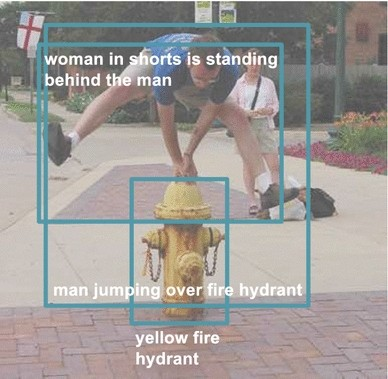

RESEARCH PERSPECTIVE
从识别物体，到理解世界
ImageNet 为机器提供了学习视觉类别的大规模数据。更进一步，理解图像不仅是回答“这是什么”，还要理解物体之间的关系，以及场景中正在发生什么。


来源：Krishna 等，IJCV 2017
SELECTED PUBLICATIONS
代表论文
ImageNet: A Large-Scale Hierarchical Image Database
IEEE Conference on Computer Vision and Pattern Recognition, 2009
构建大规模分层图像数据库，为视觉识别提供训练与评测基础。
Deep Visual-Semantic Alignments for Generating Image Descriptions
IEEE Conference on Computer Vision and Pattern Recognition, 2015 · pp. 3128–3137
对齐图像区域与语言，生成整幅图像及局部区域的自然语言描述。
Visual Genome: Connecting Language and Vision Using Crowdsourced Dense Image Annotations
International Journal of Computer Vision, 123, 32–73, 2017
通过密集区域描述、对象、属性与关系标注，连接视觉感知和语义理解。
Illuminating the Dark Spaces of Healthcare with Ambient Intelligence
Nature, 585, 193–202, 2020
探讨非接触式感知与机器学习如何支持医疗照护，同时正视隐私和临床验证的挑战。
ACADEMIC JOURNEY
学术经历与公共参与
研究与任职
- 2009–至今
- 斯坦福大学
计算机科学系；现任 Sequoia 教授
2013–2018 · 斯坦福人工智能实验室主任
2017–2018 · 休假期间任 Google 副总裁、Google Cloud AI/ML 首席科学家 - 2007–2009
- 普林斯顿大学
教职
- 2005–2006
- 伊利诺伊大学厄巴纳-香槟分校
教职
教育背景
- 2005
- 加州理工学院
PhD · 电气工程
- 2001
- 加州理工学院
Master · 电气工程
- 1999
- 普林斯顿大学
B.A. · 物理学
技术的进步，始终与人有关。
作为 AI4ALL 的联合创始人及董事会主席，李飞飞致力于推动 AI 教育的包容与多元；在 HAI，她倡导以人为本的人工智能研究，让技术发展与社会需求保持连接。
了解她在 HAI 的工作部分荣誉
2025伊丽莎白女王工程奖
2024VinFuture Prize
2020当选美国国家工程院、国家医学院院士
GET IN TOUCH
联系与进一步了解
学术事务请通过斯坦福公开行政联系渠道联系。